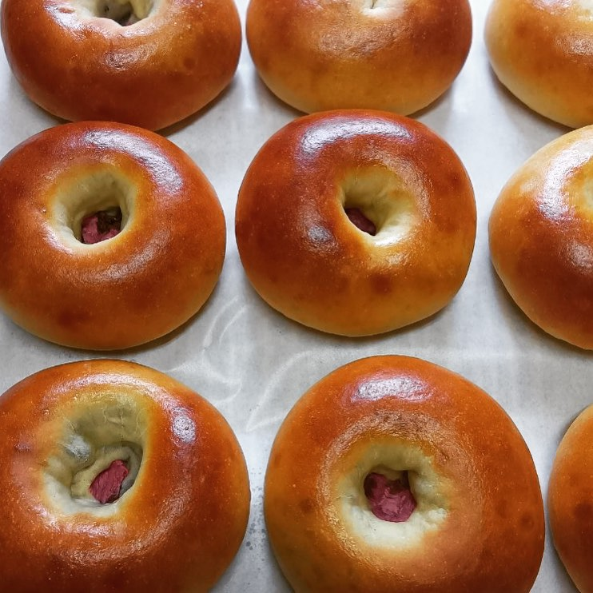
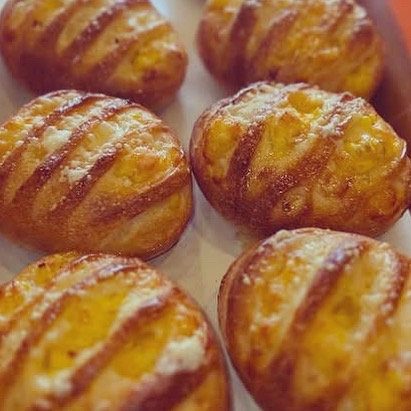

ベーグル
つやつやの焼き色が目印。その日の焼き上がりで棚に並びます。
BAKERY — OI, FUJIMINO
誠実なパンを、焼きたてで。
ふじみ野市大井、オレンジ色の看板が目印の街のパン屋です。
10:30–19:00（お昼休みあり）｜木・日曜 定休
ABOUT
ふじみ野市大井の街角にある、対面販売のパン屋です。国産小麦を使い、できるだけ手作りで、体にやさしいパンを焼いています。一番人気は食パンです。
ショーケース越しに選んで、店員さんに注文するむかしながらのスタイル。店先に「ただいま やきたてです」の札が出ていたら、熱々が並んだ合図です。

クチコミで「誠実なパン」と評された味。
SHOP INFO
| 店名 | ベーカリーゴトー |
|---|---|
| 住所 | 埼玉県ふじみ野市大井2-5-9 |
| アクセス | 東武東上線 ふじみ野駅から徒歩約10分 |
| 営業時間 | 月・火・水・金 10:30–14:00／15:00–19:00 土 10:30–19:00 |
| 定休日 | 木曜・日曜 |
| 電話 | 049-267-2323 |
CONTACT
ご来店・お問い合わせは、店頭またはお電話にてどうぞ。焼き上がりの様子はInstagramで発信されています。